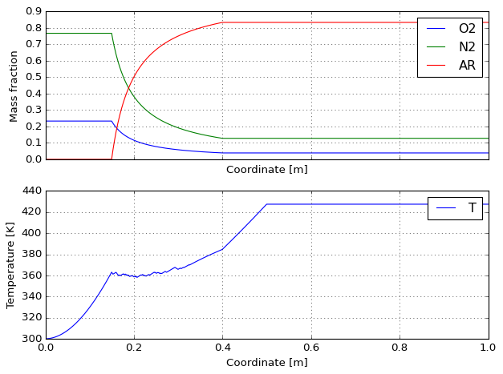
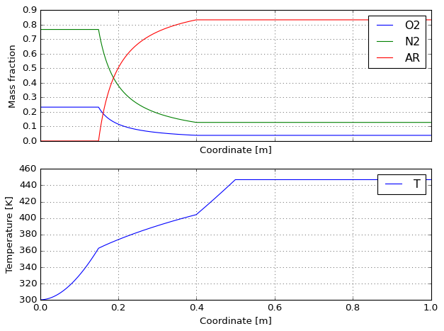
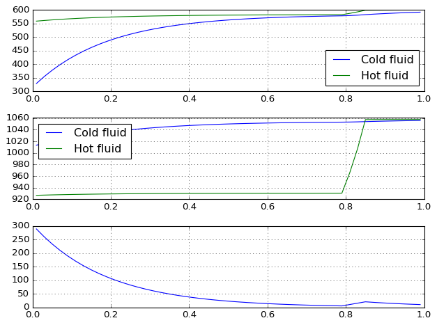
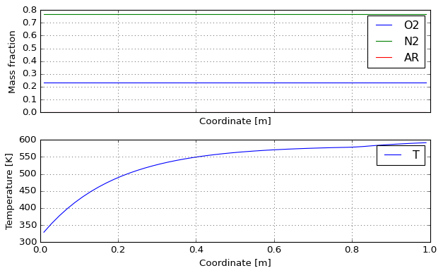
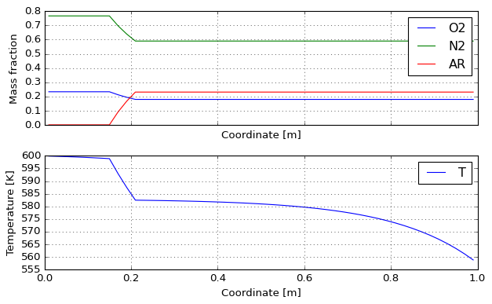

Reactor models#
[1]:
%load_ext autoreload
%autoreload 2
[2]:
from majordome.common import RelaxUpdate
from majordome.plug import PlugFlowChainCantera
from majordome.plug import get_reactor_data
from matplotlib import pyplot as plt
from tabulate import tabulate
import cantera as ct
import numpy as np
[3]:
class ReactorModel:
""" Wrapper model for creation of a plug flow reactor. """
def __init__(self, z, V, T_inj=300):
self._T_inj = T_inj
self._sol = sol = ct.Solution("airish.yaml", "air")
self._sol.TP = T_inj, ct.one_atm
self._pfr = PlugFlowChainCantera(sol.source, sol.name, z, V)
self._src = get_reactor_data(self._pfr)
def add_source(self, *, where, m, X, T=None):
self._sol.TPX = T or self._T_inj, None, X
self._src.m[where] = m
self._src.h[where] = self._sol.h
self._src.Y[where, :] = self._sol.Y
def set_power(self, Q):
self._src.Q[:] = Q
def solve(self, report=True):
self._pfr.update(self._src)
if report:
print(tabulate([
("Total mass flow rate", "g/s", 1000*self._src.m.sum()),
("Total external power", "W", self._src.Q.sum()),
("Final temperature ", "K", self._pfr.states.T[-1]),
], tablefmt="github"))
def plot(self, *args, **kwargs):
return self._pfr.quick_plot(*args, **kwargs)
@property
def table(self):
return reactor._pfr.states.to_pandas()
Single freeboard reactor#
[4]:
def sample_case(l=0.001):
z = np.arange(l/2, 1.0-l/2+0.1*l, l)
V = np.full_like(z, np.pi * 0.05**2 * l)
dilute = slice(np.argmax(z > 0.15), np.argmax(z > 0.40))
Q = 100_000 * l * (1 - np.exp(-z / 0.3))
Q[z > z[-1]/2] = 0
reactor = ReactorModel(z, V)
reactor.add_source(where=0, m=0.05, X="N2: 0.79, O2: 0.21")
reactor.add_source(where=dilute, m=1.0*l, X="AR: 1")
reactor.set_power(Q)
reactor.solve()
return reactor
[5]:
reactor = sample_case()
|----------------------|-----|-----------|
| Total mass flow rate | g/s | 300 |
| Total external power | W | 25666.3 |
| Final temperature | K | 427.412 |
[6]:
reactor.table.head().T
[6]:
| 0 | 1 | 2 | 3 | 4 | |
|---|---|---|---|---|---|
| z_cell | 0.000500 | 0.001500 | 0.002500 | 0.003500 | 0.004500 |
| V_cell | 0.000008 | 0.000008 | 0.000008 | 0.000008 | 0.000008 |
| Q_cell | 0.166528 | 0.498752 | 0.829871 | 1.159888 | 1.488806 |
| m_cell | 0.000009 | 0.000009 | 0.000009 | 0.000009 | 0.000009 |
| mdot_cell | 0.050000 | 0.050000 | 0.050000 | 0.050000 | 0.050000 |
| T | 300.000000 | 300.009876 | 300.026307 | 300.049274 | 300.078753 |
| density | 1.171971 | 1.171932 | 1.171868 | 1.171778 | 1.171663 |
| Y_O2 | 0.232909 | 0.232909 | 0.232909 | 0.232909 | 0.232909 |
| Y_N2 | 0.767091 | 0.767091 | 0.767091 | 0.767091 | 0.767091 |
| Y_AR | 0.000000 | 0.000000 | 0.000000 | 0.000000 | 0.000000 |
[7]:
reactor.plot().resize(8, 6)

[8]:
reactor.solve()
reactor.plot().resize(8, 6)
|----------------------|-----|-----------|
| Total mass flow rate | g/s | 300 |
| Total external power | W | 25666.3 |
| Final temperature | K | 446.921 |

Counter-current freeboard reactors#
[9]:
m = 0.1
L = 0.02
R = 0.05
h = 100.0
Sc = 2.0 * np.pi * R * L
Vc = 1.0 * np.pi * R**2 * L
X = "N2: 0.79, O2: 0.21"
z = np.arange(L/2, 1.0-0.99*L/2, L)
V = np.full_like(z, Vc)
r1 = ReactorModel(z, V)
r2 = ReactorModel(z, V)
r1.add_source(where=0, m=m*0.1, X=X, T=300)
r2.add_source(where=0, m=m*1.0, X=X, T=600)
dilute = slice(np.argmax(z > 0.15), np.argmax(z > 0.20) + 1)
r2.add_source(where=dilute, m=0.01, X="AR: 1", T=450)
r1.solve(report=False)
r2.solve(report=True)
|----------------------|-----|---------|
| Total mass flow rate | g/s | 130 |
| Total external power | W | 0 |
| Final temperature | K | 582.706 |
[10]:
q = np.zeros_like(z)
relax = RelaxUpdate(q, alpha=0.8)
h = 200.0
count = 0
patience = 3
max_iters = 50
T1_last = np.inf
T2_last = np.inf
T1 = r1._pfr.states.T
T2 = r2._pfr.states.T
alternate = True
alternate = False
for k in range(max_iters):
if alternate:
q[:] = relax(Sc * h * (T1 - T2[::-1]))
r1.set_power(-1 * q)
r1.solve(report=False)
T1 = r1._pfr.states.T
q[:] = relax(Sc * h * (T1 - T2[::-1]))
r2.set_power(q[::-1])
r2.solve(report=False)
T2 = r2._pfr.states.T
else:
T1 = r1._pfr.states.T
T2 = r2._pfr.states.T
q[:] = relax(Sc * h * (T1 - T2[::-1]))
r1.set_power(-1 * q)
r2.set_power(q[::-1])
r1.solve(report=False)
r2.solve(report=False)
c1 = np.isclose(T1[-1], T1_last)
c2 = np.isclose(T2[-1], T2_last)
T1_last = T1[-1]
T2_last = T2[-1]
if c1 and c2:
count += 1
if c1 and c2 and count >= patience:
print(f"Converged after {k} iterations")
break
Converged after 33 iterations
[11]:
T1 = r1._pfr.states.T
T2 = r2._pfr.states.T[::-1]
cp1 = r1._pfr.states.cp_mass
cp2 = r2._pfr.states.cp_mass[::-1]
plt.close("all")
plt.style.use("classic")
plt.figure(figsize=(8, 6), facecolor="w")
plt.subplot(311)
plt.plot(z, T1, label="Cold fluid")
plt.plot(z, T2, label="Hot fluid")
plt.grid(linestyle=":")
plt.legend(loc=4)
plt.subplot(312)
plt.plot(z, cp1, label="Cold fluid")
plt.plot(z, cp2, label="Hot fluid")
plt.grid(linestyle=":")
plt.legend(loc=2)
plt.subplot(313)
plt.plot(z, -q)
plt.grid(linestyle=":")
plt.tight_layout()

[12]:
r1.solve(report=True)
|----------------------|-----|----------|
| Total mass flow rate | g/s | 10 |
| Total external power | W | 3007.06 |
| Final temperature | K | 591.899 |
[13]:
r2.solve(report=True)
|----------------------|-----|-----------|
| Total mass flow rate | g/s | 130 |
| Total external power | W | -3007.06 |
| Final temperature | K | 558.755 |
[14]:
r1.plot().resize(8, 5)

[15]:
r2.plot().resize(8, 5)
